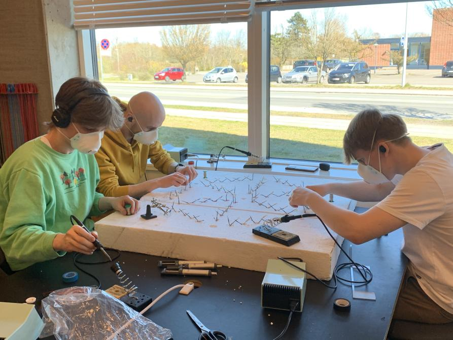
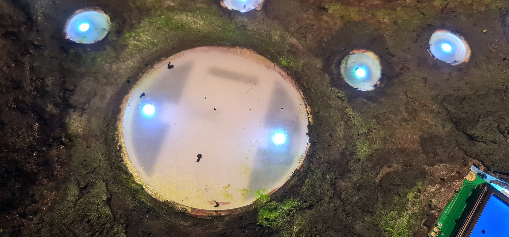

Technologies used:
- Arduino
- RFID
- LED's
- Soldering
Territory Takeover was a school project that some classmates and I created, for which we received the top grade. The assignment was to create a tactile product with interaction between human and machine. The final product we created ended up being an immersive boardgame that utilized RFID chips to give feedback to the players and automatically count points. Once a player enters an “arena” the field will automatically update to reflect the color of the player that captured the arena.
My role on the project was co-programmer, specifically specializing in the RFID’s and player detection system. I also worked on actually wiring and soldering all the electronic elements together, as well as general table construction.
